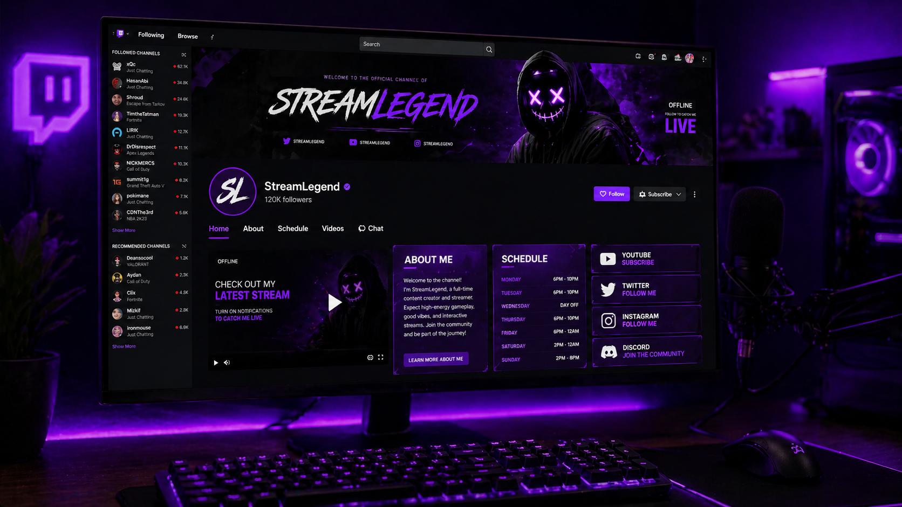

Начать стримить легко. Сложно — сделать так, чтобы тебя смотрели. На Twitch миллионы стримеров, и конкуренция огромна. Но не отчаивайтесь: даже с нуля можно набрать первую сотню постоянных зрителей за 1–2 месяца. В этом гайде я поделюсь рабочей стратегией продвижения, которая не требует вложений в рекламу.
📑 Содержание
Шаг 0: Подготовка канала
Без этого даже не начинайте
Прежде чем привлекать зрителей, убедитесь, что ваш канал выглядит привлекательно:
- Аватар и баннер — качественные, в едином стиле.
- О себе (Bio) — кратко, кто вы, что стримите, почему стоит смотреть.
- Панели под стримом — информация о ПК, донаты, расписание.
- Оверлей и алерты — минималистичные, не перегружающие экран.

Шаг 1: Выберите нишу и время
Не стримьте «всё подряд»
Новичку сложно конкурировать в топовых играх. Найдите игру с активным, но не переполненным сообществом (500–2000 зрителей в категории). Используйте сервисы вроде TwitchTracker для анализа.
Время стрима тоже важно. Изучите, когда ваша целевая аудитория активна. Утренние и дневные слоты часто менее конкурентны.
Шаг 2: Нетворкинг и сообщества
Станьте частью комьюнити
Самый быстрый способ получить первых зрителей — общение. Заходите на стримы к другим небольшим стримерам в вашей нише, общайтесь в чате, дружите. Не просите «загляни ко мне», просто будьте интересным собеседником.
Также участвуйте в Discord-серверах, тематических форумах, группах ВК. Делитесь полезным, помогайте новичкам — вас запомнят.
🤝 «Нетворкинг — это не про то, чтобы брать. Это про то, чтобы давать. Помогайте другим, и люди потянутся к вам».
Шаг 3: Клипы и короткие видео
Twitch не продвигает стримы. Продвигайте их сами.
Во время стрима делайте клипы ярких моментов. Скачивайте их и публикуйте в TikTok, YouTube Shorts, Instagram Reels. В описании указывайте ссылку на Twitch и время следующих стримов. Короткие видео — мощнейший бесплатный источник трафика в 2025 году.
| Платформа | Тип контента | Частота постинга | Потенциальный охват |
|---|---|---|---|
| TikTok | Клипы до 60 сек, вертикальные | 1–2 в день | Очень высокий |
| YouTube Shorts | Клипы до 60 сек | 1 в день | Высокий |
| Twitter (X) | Анонсы, клипы, мемы | 2–3 в день | Средний |
| Discord-сервер | Анонсы, общение, голосования | — | Постоянная аудитория |
🎬 Как сделать клип вирусным?
Выбирайте момент с эмоциональной реакцией (смех, удивление, фейл). Добавляйте субтитры. Используйте трендовую музыку. В конце — призыв к действию: «Подпишись, чтобы не пропустить стримы!»
Шаг 4: Регулярность и расписание
Зрители любят предсказуемость
Определите дни и время стримов и придерживайтесь их. Повесьте расписание на канале. Если пропускаете — предупреждайте в соцсетях. Регулярность вырабатывает привычку у зрителей заходить именно к вам.
Начните с 3–4 стримов в неделю по 2–3 часа. Этого достаточно, чтобы наработать базу и не выгореть.
Чего делать НЕ стоит: частые ошибки новичков
- F4F (follow for follow) — обмен фолловерами. Даёт мёртвую аудиторию, которая никогда не будет смотреть стрим.
- Стримы по 8 часов каждый день — ведёт к выгоранию. Качество важнее количества.
- Молчание в эфире — даже если зрителей нет, комментируйте свои действия.
- Игнорирование чата — всегда приветствуйте новых зрителей, отвечайте на вопросы.
- Плохой звук — зрители скорее простят посредственную картинку, чем ужасный звук.
📈 Примерный план на первые 30 дней
- Неделя 1: Настройка канала, выбор ниши, создание расписания.
- Неделя 2: Активный нетворкинг, первые стримы, запись клипов.
- Неделя 3: Регулярный постинг клипов в TikTok/Shorts, продолжение нетворкинга.
- Неделя 4: Анализ, какие клипы зашли лучше, корректировка контента.
🚀 «Успех на Twitch — это марафон, а не спринт. Не ждите тысячи зрителей через неделю. Работайте над качеством, будьте искренни, и аудитория придёт».